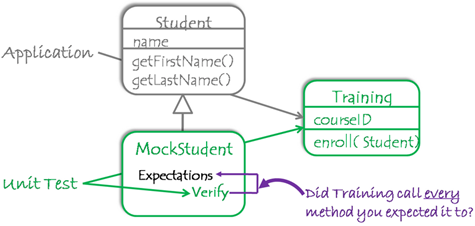

The role of unit tests in test automation
By Mohcine Madkour, Wed 03 January 2018, in category Software
By Mohcine Madkour, Wed 03 January 2018, in category Software
Unit testing is a software development and testing approach in which the smallest testable parts of an application, called units, are individually and independently tested to see if they are operating properly. Unit testing can be done manually but is usually automated. Unit testing is a part of the test-driven development (TDD) methodology that requires developers to first write failing unit tests. Then they write code in order to change the application until the test passes. Writing the failing test is important because it forces the developer to take into account all possible inputs, errors and outputs.
The result of using TDD is that an agile team can accumulate a comprehensive suite of unit tests that can be run at any time to provide feedback that their software is still working. If the new code breaks something and causes a test to fail, TDD also makes it easier to pinpoint the problem, refactor the application and fix the bug.
The AAA pattern
The goal of unit testing is to isolate each part of a program and show that the individual parts work correctly. This is in line with the YAGNI ("You ain't gonna need it") principle at the heart of the agile development practice of doing the simplest thing that can possibly work. Using the YAGNI principle to build units of software, together with other practices such as continuous refactoring and continuous integration, make it easier to automate groups or suites of unit tests. Unit test automation is a key component of a Continuous Delivery DevTestOps solution, that is, a continuously tested, two-way DevOps software delivery pipeline between an organization and its customers.
Unit tests are designed for code that has no external dependencies, such as calls to the database or web services. Because they focus on a specific behavior in a small section of a system under test (SUT), they're also relatively straight-forward to automate, especially if they are written in a standard format such as the AAA pattern.
The AAA unit test pattern
Image Source: Code Project 
The AAA (Arrange, Act, Assert ) pattern helps organize and clarify test code by breaking down a test case into the following functional sections:
The Arrange section of a unit test initializes objects and sets the value of the data that is passed to the test case.
The Act section invokes the test case with the arranged parameters.
The Assert section verifies the test case behaves as expected.
Consider the following example test scenario:
A unit test in AAA format tests a software unit that increments the number of products in an e-commerce shopping cart:
Arrange
Create a empty shopping cart
Act
Add a product to the cart
Assert
Number of products in cart increased by one
Here's more about the AAA pattern:
Arrange Section
In order to put yourself in a position where you can call a software unit and check that the result was correct, you first need to "prime the pump," or put the unit into a known beginning state. When setting up the module to be tested, it may be necessary sometimes to surround that module with other collaborator modules. For testing purposes, those collaborators could be test modules with actual or made-up data (also known mock objects, fakes, etc.).
Mock objects are simulated objects created by a developer that mimic the behavior of real objects in controlled ways, similar to how crash test dummies are expected to simulate the dynamic behavior of humans in vehicle impacts. A mock object, in the case of a database or e-commerce application, might be created as part of a unit test with a variety of fake data because real customer records may not exist yet or it would slow down testing if a complete customer database had to be accessed or initialized before running the test.
Test-specific mock objects can used to verify application behavior
Image source: hackerchick 
Mock objects are used for much more than creating made-up test data in unit testing. For example, using mock objects in place of real objects can make it easier to test a complex algorithm based on multiple objects being in particular states. The use of mock objects is extensive in the literature on automated testing using xUnit testing frameworks. You can find an example here.
In the shopping cart example, the Arrange part of the pattern involves creating a empty shopping cart by initially setting the number of products in the cart to zero. As we'll see later, there's a way to adapt the AAA syntax to handle more complicated scenarios.
Act Section:
This is the part of the test that exercises the unit of code under test by making a function or method call that returns a result or causes a reaction that can be observed.
In the shopping cart example, the Act section takes place when Buy Item button on the shopping cart is pushed.
Assert Section:
The assertion section were you check to see that you have a result or reaction (include calls to other units of code) that matches your expectations.
In the shopping cart example, the Assert section occurs when the number property is checked against your expectation (i.e. the number of products in the cart is increased by one every time the Buy Item button is pushed.)
Following the AAA pattern consistently makes test code easier to read by clearly separating what is being tested from the setup and verification steps. This helps when you need to reexamine sections of test code to see if they're still doing what it should be doing, such as following a previous set of successful test steps.
In the bottom-up testing style of test-driven development, unit tests written in the AAA syntax will help you know exactly where to search to find a bug when a unit test fails. Kent Beck, who popularized the TDD concept in his book Test Driven Development: By Example, states that TDD has two basic rules:
Never write a single line of code unless you have a failing automated test.
Eliminate duplication. In software engineering, don't repeat yourself (DRY) is a principle of agile software development, aimed at reducing repetition of information of all kinds, which is especially useful in multi-tier architectures
According to Beck, a good unit test in TDD should be able to do all of the following:
Run fast (they have short setups, run times, and break downs).
Run in isolation (you should be able to reorder them).
Use data that makes them easy to read and to understand.
Use real data (or copies of production data) when they need to.
Represent one step towards your overall goal.
This means unit tests need to be narrowly focused and shouldn't try to test too many different things at once. An example of a unit test that tries to do too many things is shown in a test scenario involving a sweater purchase in an e-commerce shopping cart application. The Arrange section in this example assumes that the pipe has been primed and you have sweaters in your inventory database, that another unit is able to show the inventory to your customer and still other units are be able to process the customer payment and remove items from inventory.
Here's some pseudo code for a unit test in the AAA format for this kind of functionality:
Arrange
setup Sweater Inventory (mostly likely with mock database objects)
set Sweater Inventory Count to 5
when Sweater Inventory is requested to remove N items, then count = count - N
Act
call the Unit Under Test to remove 3 items from inventory
Assert
the number of sweaters in the Sweater Inventory is 2
As you can see, writing large unit tests in this way can quickly become complex and convoluted, especially when you need to test end-to-end functionality for a complete 6-step e-commerce shopping-cart application, i.e.
Access Homepage –>
Customer Search results –>
Product details –>
Customer login (or Register New customer) –>
Payment details –>
Order confirmation
A simpler and better to way to use the AAA unit test scaffolding, both for unit and higher-level tests, is by using Behavior-Driven Development (BDD), which BDD pioneer Dan North defines this way:
"BDD is a second-generation, outside–in, pull-based, multiple-stakeholder, multiple-scale, high-automation, agile methodology. It describes a cycle of interactions with well-defined outputs, resulting in the delivery of working, tested software that matters."  BDD is an enhancement of TDD
Image Source: andolasoft
The main advantage of BDD is that it encourages collaboration between developers, QA and non-technical or business participants on a software project. It extends TDD by writing test cases in a natural language that non-programmers and domain experts can read. BDD features are usually defined in a GIVEN WHEN and THEN (GWT) format, which is a semi-structured way of writing down test cases. A BDD feature or user story needs to follow the following structure:
Describe who is the primary stakeholder of the feature
What effect the stakeholder wants the feature to have
What business value the stakeholder will derive from this effect
Acceptance criteria or scenarios
A brief example of a BDD feature in this format looks like this:
Feature: Items on abandoned shopping carts should be returned to inventory
In order to keep track of inventory
As an on-line store owner
I want to add items back into inventory when an on-line shopping cart is abandoned.
Scenario 1: On-line shopping cart items not purchased within 30 minutes go back into inventory
Given that a customer puts a black sweater into his shopping cart
And I have three black sweaters in inventory.
When he does not complete the purchase with 30 minutes (i.e. abandons the shopping cart)
Then I should have four black sweaters in inventory.
In TDD, the developers write the tests while in BDD the automated specifications are created by users or testers (with developers writing the underlying code that implements the test.)  Test Automation Pyramid
Image Source: Effective Testing Practices in an Agile Environment
Outside-in vs. Inside-out Testing
Agile teams generally follow one of two approaches when it comes to testing their applications, either outside-In or inside-out. In the outside-in approach, teams start by focusing on the end user's perspective and attempt to describe high-level desired functionality and goals for the software under test in the form of user stories. In every iteration or Sprint, user stories are refined until the agile team and the Product Owner/Customer Representative can agree on the acceptance criteria, which determine that a User Story works as planned. Testing then goes 'inward' and code is written to test smaller and small components until you reach the unit-test level.
In the inside-out or bottom-up approach, agile teams start with unit tests at the lowest level of the Test Automation Pyramid (see Figure 5 above). As the code evolves due to refactoring, testing efforts evolve as well as the team moves upward to acceptance level testing, which tests business logic at the API or service level. The top of the pyramid and the last thing tested is the user interface (UI).
Inside-out and outside-in are different but complementary approaches to testing. Software quality control relies on the related notions of verification and validation (V&V) that check to see that a software system meets specifications and that it fulfills its intended purpose. The terms verification and validation are often used interchangeably but have different meanings:
Verification: Checks the software with respect to specifications ("Is our team building the code right?")
Validation: Checks the software with respect to customer's expectations ("Are we building the right code?")
On modern agile DevOps projects, validation and verification steps overlap and take place continuously since agile team members must engage with customers and other stakeholders throughout the project-- to do things like prioritizing bug fixes and enhancements on the team's project backlog -- and not just after a separate test phase at the end of the project. This requires effective communication at all levels of the business since team members need to be understand what features need to be built and who needs each feature.
BDD and TDD use syntax to describe three test states that are roughly equivalent:
Given = Arrange When = Act, Then = Assert
In TDD, "inside-out" development starts with the innermost components and proceeds towards the user interface building on the previously constructed components. BDD makes it easier to for agile teams to design outside-in but then code inside-out. Because of the increased communication and collaboration among developers, QA and non-technical or business participants on a software project that the BDD/GWT syntax promotes, developers and testers are able to anticipate how to test the outer software when writing tests for the inner software. This means that tests at the Acceptance and GUI level can better take advantage of already-built tests, reducing the need for the Mock Objects mentioned earlier.
Using TDD and the AAA syntax encourages developers to write small, independent tests and to continually refactor their code. BDD supports TDD by helping bridge the gap between unit tests and higher-level acceptance and integration tests. BDD and the GWT syntax are useful in business environments, where work done by developers needs to be mapped to business value. Because the two approaches complement each other so well, you should combine them with test management tools to get the best results on your DevOps test automation projects.